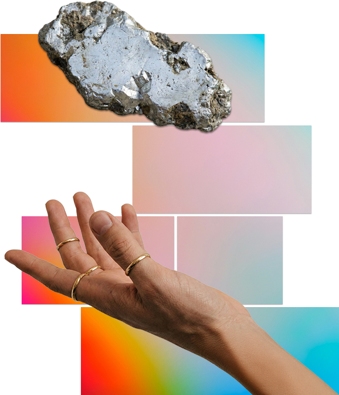
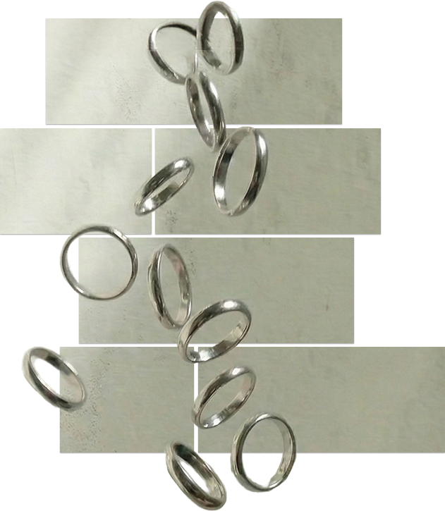

THE METAL：
PALLADIUM
なぜ、パラジウムなのか。
プラチナ、ゴールド、シルバー。 世の中には「正解」とされる貴金属がある。
だが、私たちが選んだのは、そのどれでもない。
Palladium（パラジウム / 原子番号46）。
プラチナと同じ「白金族」に属しながら、まったく異なる性質を持つこの金属は、
現代を生きる男性にとって最も合理的な選択肢だ。
その「スペック」を紐解く。
重力からの解放。
パラジウムの最大の特徴、
それは圧倒的な「軽さ」にある。
比重は12.0。
これはプラチナの比重21.4に対して、約半分に近い数値。
重厚な見た目に反して、指に通した瞬間、その軽さに驚くはず。
キーボードを叩く指先にも、グラスを持つ手にも、
不要なストレスを与えない。
アクセサリーという異物感を消し、
まるで皮膚の一部のように馴染む「エアリー」な着用感。
それは、身軽さを好むあなたのライフスタイルに合致する。

あえて選ぶ、希少価値。
金やプラチナと同様、地球上で採掘される量はごくわずか。
近年では、その工業的価値の高さから価格も高騰し、
「レアメタル」としての存在感を増している。
安価な代用品として選ぶのではない。
機能美と、独自の美学を持って選ぶ。
「みんなが持っているから」ではなく、
「この金属が優れているから」という理由で選ばれたリングは、
あなたの個性を静かに、しかし雄弁に物語る。
渋みを帯びた、落ち着いた輝き。
プラチナが「華やかな白」だとするなら、
パラジウムは「静寂の銀」だ。
その色味は、わずかに暗く、
青みがかったグレーを帯びている。
この独特のダークトーンは、メッキではなく金属そのものの色。
だから、剥がれることはない。
主張しすぎないその色は、コンクリートの壁や、
使い込んだデニム、モノトーンのファッションと共鳴する。
キラキラとした輝きよりも、
渋さを求めるあなたのための色。

傷を恐れない、実用的な硬度。
「軽い＝弱い」ではない。
パラジウムは、プラチナと同等、あるいはそれ以上の硬度を持つ。
歯科治療や工業用パーツにも用いられるそのタフさは、
日常使いのリングとして理想的なスペックだ。
シルバーのようにすぐに黒ずむ（硫化する）こともなく、
汗や温泉による変質もほとんど起きない。
メンテナンスに神経を尖らせる必要はない。
ガシガシ使い込み、
刻まれる小傷さえも「味」として愛せる。
ジュエリーではなく、
信頼できる「ギア」としての強度がここにある。
誰もが知る正解より、自分が納得できる選択を。